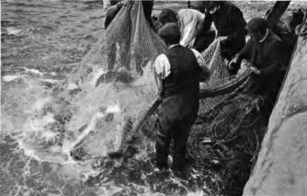
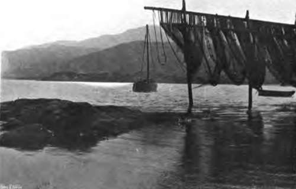

Fishery Laws. Part 6
Description
This section is from the book "Fishing", by Horace G. Hutchinson. Also available from Amazon: Fishing.
Fishery Laws. Part 6
Where no figures are inserted no licences are issued. The figures are the maximum.
By-laws have also been made as to the annual close time for trout and char in certain districts. When the district is not mentioned, the close time is that fixed by statute-from the 1st October to the 2nd February inclusive. If the instrument is not specified the close time applies to all modes of capture.
District. | Trout. | Char. |
Adur | Oct 1 to March 31 | • • • |
Avon (Devon). . | Oct. 1 to Feb. 28 | • • • |
Avon and Stour . | Oct 1 to March 31 | • • • |
Ayron . . . . | Oct 1 to March 15 | • • • |
Camel . . . . | Oct. 1 to March 15 | • • • |
Cleddy . . . . | Sept 29 to March 1 | • • • |
Coquet . . . . | *Nov. 1 to March 3 | • • • |
Cuckmere . . . | Oct. 1 to March 31 | • • • |
Dart | Oct 2 to Feb. 28 | • • • |
Dee | *Oct 14 to Feb. 14 | • • • |
Derwent . . . | Sept. 15 to March 10 | Nov. 1 to June 30 |
Eden | *Oct. 2 to Feb. 28 | • • • |
" | +Sept 2 to Feb. 28 | • • • |
Esk (Yorkshire) . | Oct 1 to March 15 | • • • |
Elwy and Clwyd | Oct 2 to Feb. 28 | • • • |
Exe | Sept. 15 to last Feb. | • • • |
Fowey . . . . | Oct. 1 to April 30 | • • • |
Kent | Oct. 2 to March 3 | • • • |
Lune | Oct 2 to March 1 | • • • |
Norfolk & Suffolk | +Sept. 10 to Jan. 25 | • • • |
Ouse and Nene . | Oct. 2 to March 31 | • • • |
Ribble . . . . | Oct. 2 to March 1 | • • • |
Seiont . . . . | Oct. 2 to March 1 | Oct. 22 to March 1. |
Severn . . . . | Oct 2 to March 1 | • • • |
Suffolk and Essex | Oct 2 to April 10 | • • • |
Taff and Ely . . | Sept. 20 to Feb. 1 | • • • |
Tees | Oct. 1 to March 1 | • • • |
Teify..... | Oct 1 to Feb. 28 | • • • |
Teign . . . . | Oct 1 to March 2 | • • • |
Towy | Oct. 2 to March 1 | • • • |
Trent | Oct. 2 to March 15 | • • • |
Tyne | Oct. 1 to March 21 | • • • |
Usk and Ebbw . | Oct 2 to Feb. 14 | • • • |
Wear . . . . | Oct 2 to March 1 | • • • |
West Cumberland | Sept. 2 to March 10 | • • • |
Wye | Oct. 2 to March 1 | • • • |
Yorkshire . . . | Oct. 1 to March 15 | • • • |
* Rods. + Nets.
Some districts have made by-laws as to fresh water fish. There is no power to vary the close time 15 th March to 15 th June, fixed by statute, but there is a power given to exempt the whole or part of the district from the close time and to exempt all or certain kinds of fish. The following districts have exercised this power:-
District. | Extent of District Exempted. | Kind of Fish. |
Avon (Devon) | Whole | All |
Avon and Stour | " | " |
Eden | " | " |
Kent | " | |
Severn | " | " |
" | Part | All but Grayling |
Towy | Whole | All |
Usk | " | |
Wye | " | All |
Yorkshire | " | Pike |
" | Part | All |
In all the rest of England and Wales the close time applies to all fresh water fish.
The following districts have made by-laws as to the kind of instrument that may be used for taking fresh water fish and the minimum size of mesh:-
District | Kind of Instrument | Size of Mesh. |
Adur | - | • • • |
Avon, Brue, and Parret | - | 1¾ inch |
Avon and Stour | • • • | |
Camel | - | • • • |
Cuckmere | - | • • • |
Derewent | 1 inch | |
Exe | - | • • • |
Fowey | - | • • • |
Kent | - | - |
Lune | - | • • • |
Ouse and Nane | - | • • • |
Norfolk and Suffolk | - | • • • |
Ribble | 2½ inches | |
Severn | - | 1 3/8 Bush nets |
Sunffolk and Essex | - | • • • |
Towy | - | 1 inch |
Trent | • • • | |
Usk | 1 inch | |
Wear | - | • • • |
Welland | - | • • • |
Witham | - | • • • |
Wye | - | 1 inch |
Except in the places mentioned there is no restriction on taking fresh water fish or on the mesh of nets used for that purpose.
The Thames has a series of by-laws of its own, made under the Thames Conservancy Acts. Under these, in the Thames above London Bridge, only a rod and line and certain specified nets can be used, the nets may only be used of the size, in the way, and at the places fixed for their use.
Below London Bridge other kinds of nets may be used in the ways mentioned. No trout may be taken between nth September and 31st March, and no other fish above London Bridge between 15 th March and 15 th June. No night fishing is allowed. All fishing in certain preserves is prohibited. The Thames has regulations as to the size of fish that may be taken, and as this is not the case elsewhere the sizes are given. The measurements are the extreme length of the fish in inches:-Pike 18, perch 8, chub 10, roach 7, dace 6, barbel 16, trout 16, grayling 12, bream 10, carp 10, tench 8, rudd 6, gudgeon 4, flounder 7, smelts 6, lampeons 7, soles and slips 8, whiting 7, plaice and dabs 8.
Norfolk and Suffolk have also a special code of their own. Conservators are appointed for the rivers in these counties who have all the powers of conservators under the Freshwater Fisheries Acts, and also certain additional powers in making bylaws. They have made by-laws as to close time, the kind of nets to be used, and the mode of using them, the size and mesh of nets, the use of trimmers, and the taking bait and eels.
The Tweed
This is another place which has its own special Acts. The Tweed Commissioners, the body in whom the management of the Tweed fisheries is vested, have under the Tweed Fisheries Act, 1857, and the Tweed Fisheries Act, 1859, very wide, it might almost be said arbitrary powers, for the prevention of poaching. These powers differ from any power possessed by any other authority in England or Scotland chiefly in being much more severe. But they do not avail to stop poaching, nor, what is perhaps still more needed, to stop the pollution of the river. It should be borne in mind that in the Tweed watershed none of the English or Scotch fishery Acts or by-laws apply.
Scotch Fishery Laws are to a great extent peculiar to Scotland, various fundamental points causing them to differ from the law of England and Ireland. The most important of these are: (i) That all salmon fishing by any means but angling is presumed by Scotch law to belong to the Crown, so that no one can take salmon except with rod and line, unless he can show a royal grant, either express, or implied from long use. It follows from this that no riparian owner in Scotland has, as such, the right to net for salmon in the water adjoining his own lands, whether tidal or non-tidal. He may have it, but if so he has it by a title other than that by which he holds his lands. (2) That as salmon seem to have been the only fish the old Scotch law regarded, none of the restrictive legislation applies to other fish than salmon, unless expressly named in the act, so that the riparian owners can take them as they please; and this right to the fish, by some analogy to the salmon, has been decided by the Scotch Courts to be a right that does not necessarily pass with a lease of lands to a tenant, thus in a lease to an agricultural tenant, which makes no mention of the right of fishing, the right to fish for trout remains with the landlord. (3) That while statute has restricted the capture of salmon in inland waters to net and coble fishing by the Crown grantees, and to angling by the riparian owners, and in tidal to fixed engines and net and coble by the Crown grantees, yet as to all other fish than salmon, in the case of riparian owners, and those whose rights are derived from them, the restrictions do not apply, but only to the general public and persons who have no right to fish. (4) That by Scotch law persons cannot be proceeded against summarily for fishing unless they are fishing in some way prohibited by statute. A trespasser who is angling can only be proceeded against by action, there being nothing in the Scotch laws to make a trespasser fishing in a legal way where he has no right to fish liable to a penalty on a summary conviction unless he is guilty of the further offence of using some method of fishing prohibited by statute. The remedy for legal fishing is a civil, not a criminal one.
107.- Tweed-Fifteen Large Salmon.
108.- Tarbert Net Poles.
In some respects, therefore, the Scotch law is far clearer and simpler than the English, and when the two main principles are understood-that salmon is a royal fish, and that riparian owners can catch other fish as they like and when they like, it does not in ordinary cases present much difficulty. The important questions which arise from time to time, and which involve very great difficulties, are in cases where the right to catch salmon is claimed against the Crown by an individual. Here it is a case of evidence; the claimant has to prove his case, and this often gives rise to very great difficulties, which it is not necessary to consider here. It should, however, be said that no proof of length of user of rod fishing is evidence of a grant from the Crown of salmon fishing, nor is the proof of the use of any kind of net fishing other than some form of net and coble fishing, as all other forms of netting are illegal, and proof of illegal modes will not give rise to an inference of a legal grant.
Continue to: